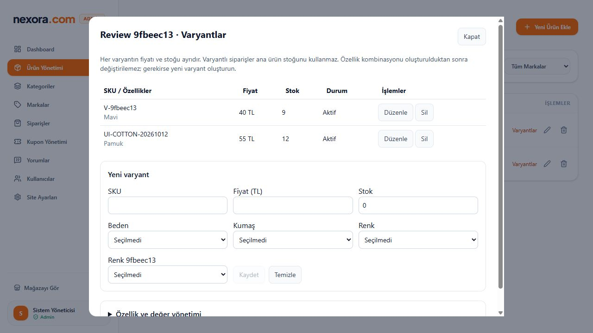

Unicode parolalarda BCrypt sınırı
Kayıt, giriş ve parola sıfırlama artık karakter sayısı yerine UTF-8 byte uzunluğunu denetliyor. Hash katmanında da 72 byte sınırı uygulanıyor; uzun parolalar sessizce kırpılmıyor.
PasswordPolicy · PasswordHasher11 Ekim tarihli incelemenin F01–F12 ana bulguları kodda ele alındı. Güvenlik, veri doğruluğu, yönetim arayüzü ve işletim değişiklikleri aşağıda somut test kanıtlarıyla eşleştirildi.
codex/inceleme-bulgularini-duzelt dalında çalışma dosyalarına uygulandı. Commit/push veya canlı dağıtım yapılmadı. Ödeme sistemi mock olarak korundu. Önceki 7,6/10 puanı eski snapshot'a aittir; bu kapanış doğrulaması yeni bir tam inceleme ve yeni puanlama değildir.Kayıt, giriş ve parola sıfırlama artık karakter sayısı yerine UTF-8 byte uzunluğunu denetliyor. Hash katmanında da 72 byte sınırı uygulanıyor; uzun parolalar sessizce kırpılmıyor.
PasswordPolicy · PasswordHasher15 dakikalık son kullanma zamanı eklendi. Süresi dolan adres kayıt işlemini engellemiyor. Profilde açık iptal işlemi var; doğrulama/yeniden gönderme ve arka plan temizliği aynı kullanıcı kilidi altında yürütülüyor. İsim güncellemek bekleyen değişikliği yanlışlıkla iptal etmiyor.
İptal komutu · AuthCleanupJobRol kaldırma ve kullanıcı pasifleştirme kontrolleri yalnız aktif ve e-postası doğrulanmış diğer yöneticileri sayıyor. Global admin kilidi korunuyor.
Rol güncelleme · Durum güncellemePasif ürün detayı ve varyantları public akışta görünmüyor. Pasif kayıtları düzenleme yetkisi controller tarafından doğrulanan Admin rolüyle açılıyor.
ProductsController · Detay sorgusuOrtak yardımcı uzun tamsayıyla offset hesaplıyor. Sekiz sayfalı sorguda page ≥ 1, pageSize 1–100 ve offset ≤ 100.000 sınırları uygulanıyor. Geçersiz değerler kontrollü 400 sonucuna dönüşüyor.
PaginationGerçek istemci iptali ile sunucu iptali ayrıldı. İstemci bağlantısı iptal edilmişse 499, sunucu iptali/zaman aşımında 503 hata sözleşmesi uygulanıyor. Başlamış yanıta ikinci bir JSON gövdesi yazılmıyor; bağlantı sonlandırılıyor.
GlobalExceptionHandlerMiddlewareBu küçük listelerde stale veri üreten pipeline cache kaldırıldı. Kategori ve marka sorguları doğrudan veritabanından okunuyor; kullanılmayan marker sözleşmeleri ve davranış kaydı temizlendi.
Pipeline kaydı · Kategori sorgusuTek auth-email kilidi normalize edilmiş e-posta başına daraltıldı. Gerekli yerlerde e-posta → kullanıcı kilit sırası korunuyor. Kayıtta maliyetli parola hash işlemi kilit dışına alındı.
Eşzamanlılık testleriWeb/Admin access tokenları bellek içine, refresh tokenları ayrı HttpOnly cookie'lere taşındı. Eski localStorage tokenları siliniyor. Cookie akışı explicit istemci-origin kontrolü, SameSite=Strict ve production HTTPS şartıyla korunuyor. Oturum bootstrap/refresh/logout, geç kalan cevap koruması ve kullanıcıya göre query-cache ayrımı güncellendi. Build çıktısına CSP eklendi.
BrowserSession · Web session · Admin API istemcisiForm nesli/ürün kimliği kontrolü eklendi. Eski detay ve upload cevapları kapanmış ya da başka ürüne açılmış forma yazamıyor. Upload/sürüm yüklemesi sırasında kaydetme ve kayıt sırasında kapatma kontrol ediliyor.
Ürün formu yarış testleriAdmin ürün tablosuna varyant yönetimi eklendi: oluşturma, SKU/fiyat/stok/aktiflik düzenleme, silme ve xmin conflict geri bildirimi. Özellik/değer CRUD API'si ve paneli tamamlandı. Kullanılan değerlerin silinmesi engelleniyor; özellik silme ile varyant oluşturma koordine ediliyor.
VariantManager · Özellik yönetimiRol, stok/fiyat, aktiflik ve seçili ayar/katalog değişikliklerine actor/target/trace ve önceki/yeni değer audit'i eklendi. Hassas alanlar whitelist dışında. Audit iş verisiyle aynı transaction'da. Logs için 30 gün, audit için 365 gün retention; dakikalık, tablo başına 1.000 satırlık temizlik ve zaman indeksleri eklendi. DB logger 1 saniyelik timeout ile sınırlandı.
AuditRecorder · LogRetentionJob| Kontrol | Sonuç | Kapsam |
|---|---|---|
| .NET birim/mimari | 196 geçti | Mevcut regresyonlar ve yeni review testleri. |
| PostgreSQL + Redis | 19 geçti | Gerçek altyapı, migration, paralel kayıt/kilit ve transaction rollback. |
| Admin frontend | 18 geçti | Oturum ve ürün formu yarışları dahil. |
| Web frontend | 22 geçti | Oturum, sepet ve mevcut regresyonlar. |
| Web + Admin build | Başarılı | TypeScript ve Vite production çıktısı. |
| Lint | 0 hata | Önceden mevcut Fast Refresh uyarıları: Admin 2, Web 5. |
| smoke-api.mjs | Başarılı | Production Alpine API / gerçek HTTP / native codec. |
| smoke-commerce.mjs | Başarılı | Checkout, snapshot ve sipariş durum geçişleri. |
| smoke-review.mjs | Başarılı | İzole Development HTTP cookie + katalog/variant/özellik regresyonları. |
| Tarayıcı | Kritik yollar doğrulandı | Admin/Web login, profil yönlendirmesi, Admin reload ile oturum, varyant stok ve oluşturma. |

20261012074535_ReviewHardening migration'ını normal migration akışında uygulayın. Yeni pending-email süresi, audit tablosu ve indeksler içerir. Mevcut yerel veritabanına uygulanmadı; test DB'lerinde doğrulandı.
Eski süresiz pending-email istekleri yeniden başlatılmalıdır. Retention için Hangfire çalışmalıdır.
Eski token saklama şekli kaldırıldığı için bir kez yeniden giriş gerekir. 72 UTF-8 byte'ı aşan eski parolalarda sıfırlama gerekir.
Özel host/portlarda CORS ve Web/Admin origin listelerini ayarlayın. Production'da HTTPS ve güvenilir proxy ayarı zorunludur.
Tam geçiş ve doğrulama reçetesi · Frontend reverse proxy referansı · Migration kaynağı